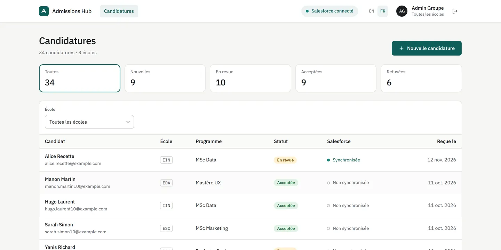
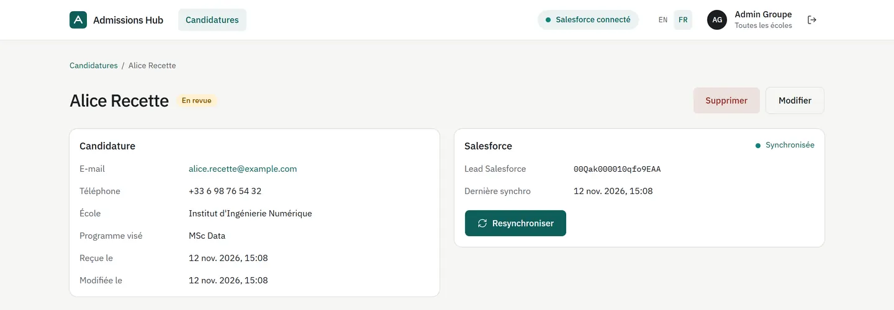

Applications métier
Conception et développement en C#, .NET et Blazor : un système d'hypervision de parc informatique, une application de gravure de clés USB pour l'imagerie médicale.
C# · .NET · Blazor · MudBlazor
Basé à Paris, ouvert à la mobilité
Concepteur Développeur — C#, JavaScript, SQL
Je construis des applications métier de bout en bout : des spécifications fonctionnelles à la mise en production, puis au support des utilisateurs.
Conception et développement en C#, .NET et Blazor : un système d'hypervision de parc informatique, une application de gravure de clés USB pour l'imagerie médicale.
C# · .NET · Blazor · MudBlazor
Interfaces et API en JavaScript et TypeScript, adossées à des bases SQL.
TypeScript · React · Vue.js · Node.js / Express · PostgreSQL · MySQL
Du besoin à la conception technique, puis tests, recette, mise en production et support des utilisateurs, documentation comprise.
Plans de test · Docker · Linux · Intégration continue
J'utilise des agents de code IA (Claude Code) au quotidien pour livrer plus vite.
démo en ligne · dépôt public
Portail qui rassemble les candidatures de plusieurs écoles et les synchronise avec Salesforce.


Premier chargement de la démo : environ 30 s, le temps que l'hébergement gratuit se réveille.
dépôt public
Quiz quotidien : deviner un Pokémon à partir de son empreinte. Mode quotidien, mode infini et indices progressifs.
Code sourcedépôt public
Petit utilitaire Python qui supprime, après confirmation, les environnements Remote Control de Claude Code restés visibles une fois arrêtés.
Code sourceTableau de bord du homelab : connexion par passkeys (WebAuthn), agent Docker, tests.
Application de demandes de médias intégrée à Sonarr et Radarr.
Client Emby natif pour Windows et Android TV.
Désinstalleur d'applications pour Windows.
Depuis octobre 2024 · CDI
TrustComs, Versailles
C# · .NET · Blazor · SQL · JavaScript · Linux · Docker
Janvier 2023 – septembre 2024 · Alternance
TrustComs, Versailles
Octobre 2021 – août 2022 · Alternance
MPTronic (imagerie médicale), Paris
Janvier – mars 2021 · Stage
BWiT, Champs-sur-Marne
2021 – 2024
Management et gestion de projet SI · Institut G4, Paris
2019 – 2021
Solutions logicielles et applications métiers · Lycée Louise Michel, Bobigny